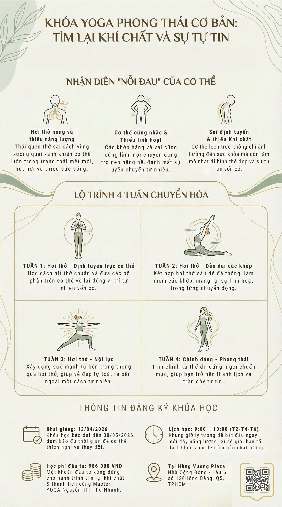
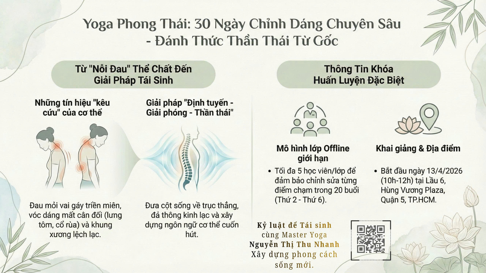
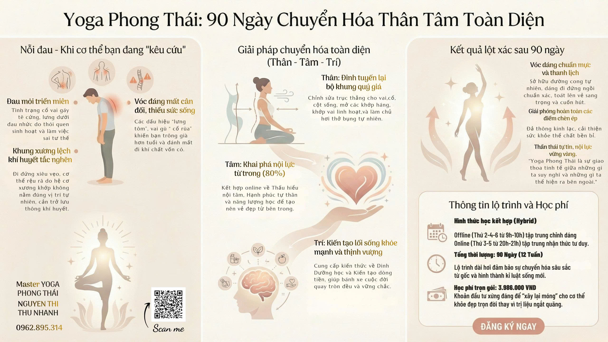

Vai gù, cổ rùa
Vùng cổ vai gáy bị kéo căng khiến dáng đứng khép lại và thiếu tự tin khi xuất hiện.
 Yoga Phong Thái
BODY TALK
Đặt lịch
Yoga Phong Thái
BODY TALK
Đặt lịch
Personal transformation
Lộ trình Yoga Phong Thái cùng Master Thu Nhanh giúp phụ nữ mở hơi thở, chỉnh dáng và xây dựng khí chất thanh lịch từ bên trong.

“Hơi thở là cây cầu đưa phụ nữ trở về với sự bình an và khí chất của chính mình.” Master Thu Nhanh

Học cùng BODY TALK
Trang học được xây dựng theo hướng bán khóa học, video luyện tập và tư vấn cá nhân: học viên có thể bắt đầu từ lớp cơ bản, đi sâu vào chỉnh dáng 30 ngày hoặc theo đuổi lộ trình 90 ngày để tái thiết thân - tâm - trí.
Nhận diện vấn đề
Khi trục dáng lệch, hơi thở nông và cơ thể thiếu linh hoạt, phong thái bên ngoài cũng mất đi sự nhẹ nhàng. Yoga Phong Thái bắt đầu bằng việc đọc lại những tín hiệu đó.
Vùng cổ vai gáy bị kéo căng khiến dáng đứng khép lại và thiếu tự tin khi xuất hiện.
Nhịp thở ngắn làm cơ thể nhanh mệt, ngực không mở và năng lượng khó duy trì.
Khớp hông, vai, lưng thiếu linh hoạt làm chuyển động kém mềm mại và nặng nề.
Dáng đi, dáng ngồi và biểu cảm cơ thể chưa tạo được cảm giác thanh lịch tự nhiên.
Phương pháp BODY TALK
BODY TALK không chỉ dạy động tác. Phương pháp này giúp học viên hiểu cách cơ thể vận hành, đưa cột sống về trục thẳng và biến sự kỷ luật thành phong thái sống.
Đưa nhịp thở sâu trở lại để mở ngực, định tâm và giải phóng căng thẳng.
Định tuyến cổ, vai, cột sống, hông để vóc dáng cân đối và chuyển động nhẹ hơn.
Rèn dáng đi, dáng đứng, ánh nhìn và khí chất thanh lịch trong đời sống hằng ngày.
Các khóa học nổi bật
Thiết kế khóa học theo tầng: nền tảng cho người mới, chỉnh dáng cho người cần cải thiện rõ rệt, và chương trình 90 ngày cho học viên muốn chuyển hóa sâu hơn.
Cho người mới bắt đầu
Học cách thở chuẩn, làm mềm cơ thể và đặt lại nền tảng dáng đứng.
Lớp nhỏ hoặc cá nhân
Mentor chỉnh từng điểm sai lệch để cải thiện vai, cổ, lưng và trục cơ thể.
12 tuần hybrid
Kết hợp chỉnh dáng, nội lực, thói quen sống và tư duy chăm sóc cơ thể.
Quy trình
Mỗi giai đoạn được thiết kế để thay đổi diễn ra tự nhiên: nhận diện vấn đề, xây nền tảng, chỉnh sửa chuyên sâu và duy trì phong thái mới.
Đọc tín hiệu cơ thể, xác định vùng căng và mục tiêu thay đổi của từng học viên.
Xây lại hơi thở, sự linh hoạt và ý thức trục cơ thể trong từng chuyển động.
Căn chỉnh vai, cổ, cột sống, hông và các thói quen làm sai lệch vóc dáng.
Biến kỹ thuật thành phong thái: đi, đứng, ngồi, thở và hiện diện tự tin hơn.
Thư viện BODY TALK
Các bài học được nhóm theo từng vấn đề cơ thể và từng giai đoạn luyện tập để học viên đi qua một hành trình rõ ràng: thở đúng, chỉnh đúng, rồi đưa phong thái mới vào đời sống.
 Bài học mẫu
Bài học mẫu
Module mở đầu
Làm chủ nhịp thở, mở ngực và xây lại nhận thức cơ thể cho người mới.
Điều chỉnh vai, cổ, cột sống và các thói quen làm sai lệch vóc dáng.
Hành trình chuyên sâu kết nối luyện tập, thói quen sống và nội lực.
Gửi tình trạng cơ thể hiện tại để được gợi ý khóa học phù hợp trước khi bắt đầu.
Bằng chứng học tập
Thay vì chỉ dùng hình ảnh đẹp, landing page cần cho khách thấy chương trình có cấu trúc học tập: khóa cơ bản, 30 ngày chỉnh dáng, 90 ngày chuyển hóa.




Người đồng hành
Đồng hành cùng học viên bằng tinh thần kỷ luật để tái sinh: chỉnh sửa cơ thể bằng sự hiểu biết, hơi thở và thói quen sống mới thay vì ép dáng trong thời gian ngắn.
Câu hỏi thường gặp
Phù hợp với phụ nữ muốn cải thiện dáng, vai cổ gáy, hơi thở, sự linh hoạt và phong thái khi xuất hiện.
30 ngày tập trung chỉnh dáng chuyên sâu. 90 ngày mở rộng sang thân - tâm - trí, thói quen sống và duy trì kết quả.
Không bắt buộc. Lớp cơ bản được thiết kế để học viên bắt đầu từ hơi thở, trục dáng và chuyển động an toàn.
Có thể tư vấn theo nhu cầu. Lớp offline phù hợp người cần chỉnh lỗi trực tiếp, còn online phù hợp duy trì luyện tập linh hoạt.
Tư vấn lộ trình
Gửi thông tin để được tư vấn lộ trình phù hợp: 4 tuần nền tảng, 30 ngày chỉnh dáng hoặc 90 ngày chuyển hóa toàn diện.